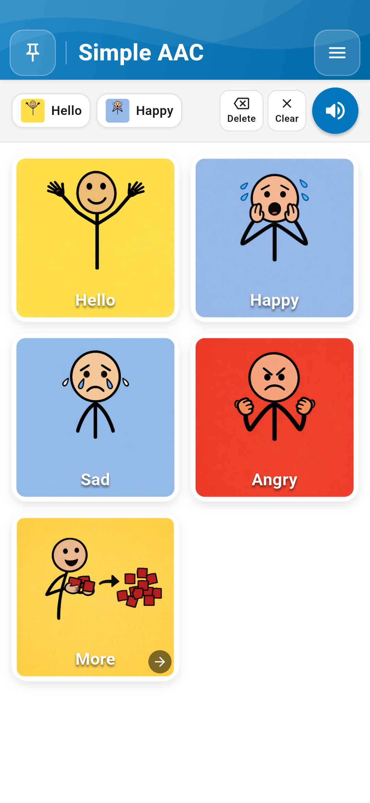
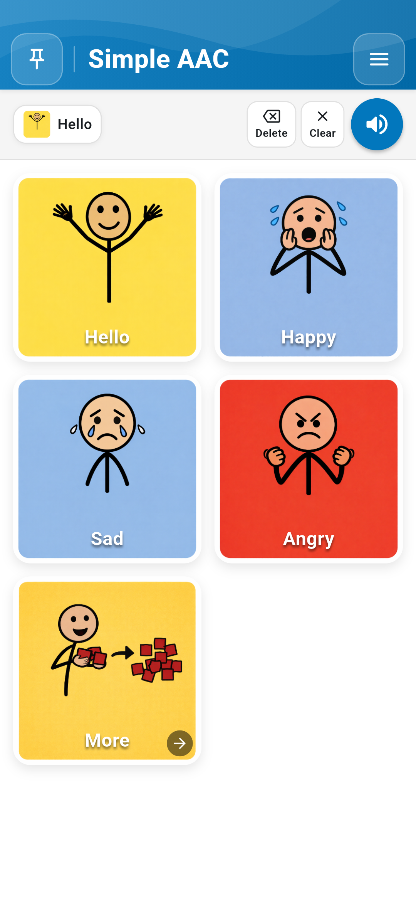
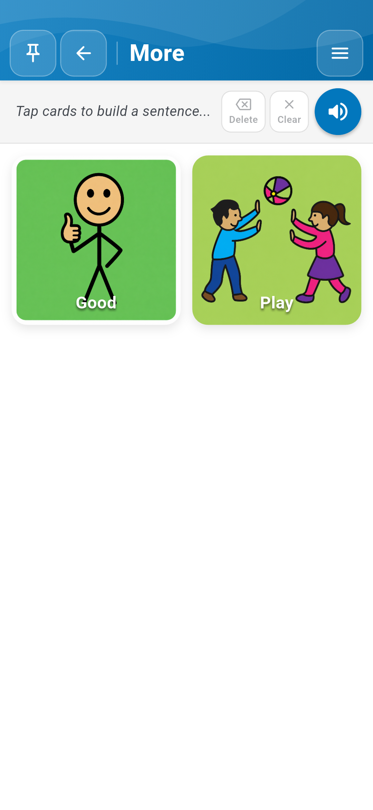
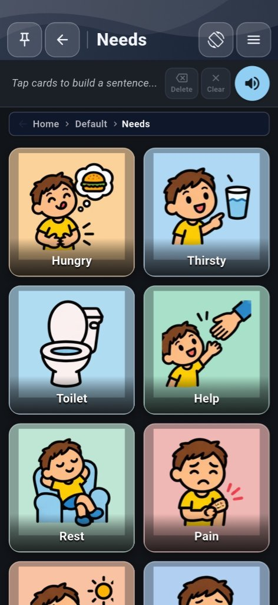
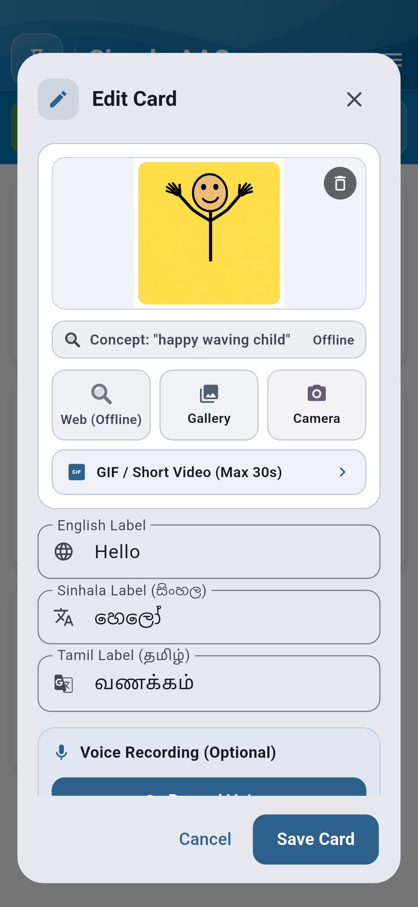
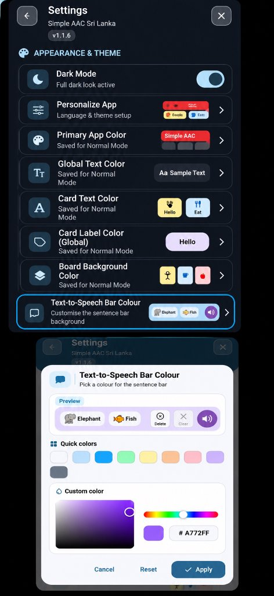

அதிகாரப்பூர்வ பயனர் வழிகாட்டி • பதிப்பு 1.1.6 (BUILD 16)
Simple AAC இலங்கை
மாற்று மற்றும் மேம்படுத்தப்பட்ட தொடர்பாடலுக்கான முழுமையான முத்தமிழ் கையேடு
பேச்சு குறைபாடுகள் உள்ள சிறார்கள் மற்றும் சிறப்புத் தேவைகளைக் கொண்டவர்கள் தங்களின் அன்றாட தேவைகள், உணர்வுகள் மற்றும் எண்ணங்களை காட்சி அட்டைகள் மற்றும் உடனடி ஆஃப்லைன் குரல் (Offline Speech) மூலம் இலகுவாக வெளிப்படுத்துவதற்காக பெற்றோர், பராமரிப்பாளர்கள், ஆசிரியர்கள் மற்றும் பேச்சு சிகிச்சையாளர்களுக்காக உருவாக்கப்பட்ட நடைமுறை வழிகாட்டி.
பயன்பாட்டுப் பதிப்பு:
v1.1.6 (உற்பத்தி Build 16)
ஆதரிக்கப்படும் மொழிகள்:
தமிழ் (ta-IN), சிங்களம் (si-LK), ஆங்கிலம் (en-US)
இயக்க முறைமை:
Android 5.0 (Lollipop) முதல் Android 15+ வரை
ஆஃப்லைன் கட்டமைப்பு:
100% ஆஃப்லைன் (இணையம் தேவையில்லை)
தொகுப்பு அடையாளம்:
lk.yasas.simpleaac
வெளியீட்டு தேதி:
நவம்பர் 2026
பொருளடக்கம் (Table of Contents)
| விரைவு தொடக்க வழிகாட்டி — முதல் தொடர்பாடலுக்கான 5 எளிய படிகள் | பக்கம் 2 |
| அத்தியாயம் 1 — Simple AAC பயன்பாட்டைத் தொடங்குதல் மற்றும் வழிசெலுத்தல் | பக்கம் 2 |
| அத்தியாயம் 2 — பேசுதல் மற்றும் வாக்கியங்களை உருவாக்குதல் | பக்கம் 3 |
| அத்தியாயம் 3 — தொடர்பாடல் அட்டைகள் மற்றும் பிரிவுக் கோப்புறைகள் | பக்கம் 4 |
| அத்தியாயம் 4 — கேமரா, படத்தொகுப்பு (Gallery) மற்றும் ஊடக வசதிகள் | பக்கம் 5 |
| அத்தியாயம் 5 — தோற்றம், வண்ண தீம்கள் மற்றும் அணுகல்தன்மை (Accessibility) | பக்கம் 6 |
| அத்தியாயம் 6 — பராமரிப்பாளர் பூட்டு (Caregiver Lock) மற்றும் குழந்தை பாதுகாப்பு | பக்கம் 7 |
| அத்தியாயம் 7 — தரவு காப்புப்பிரதி (Backup), மீட்டமைத்தல் மற்றும் தனியுரிமை | பக்கம் 7 |
| அத்தியாயம் 8 — சிக்கல் தீர்த்தல் மற்றும் அடிக்கடி கேட்கப்படும் கேள்விகள் | பக்கம் 8 |
Simple AAC இலங்கை சிக்கலான அமைப்புகள் ஏதுமின்றி உடனடிப் பயன்பாட்டிற்கு ஏற்றவாறு வடிவமைக்கப்பட்டுள்ளது. தொடர்பாடலைத் தொடங்க இந்த 5 எளிய படிகளைப் பின்பற்றுங்கள்:
- பயன்பாட்டைத் திறக்கவும்: உங்கள் சாதனத்தில் உள்ள Simple AAC ஐகானைத் தொடவும். அமைதியான நீல நிற தொடர்பாடல் பலகை உடனடியாகத் திறக்கும்.
- ஏதேனும் ஓர் அட்டையைத் தொடவும்: வணக்கம் (Hello) அட்டையைத் தொடவும். பயன்பாடு உடனடியாக தெளிவான தமிழில் "வணக்கம்" என்று கூறி அட்டையை ஒளிவட்டமிட்டுக் காட்டும்.
- வாக்கியம் அமைக்கவும்: எனக்கு வேண்டும் (I want) அட்டையைத் தொட்டு, பின்னர் தண்ணீர் (Water) அட்டையைத் தொடவும். இரண்டு வார்த்தைகளும் மேல் வாக்கியப் பட்டியில் வரிசையாகத் தோன்றும்.
- முழு வாக்கியத்தையும் பேசச் செய்யவும்: வாக்கியப் பட்டியின் வலதுபுறத்தில் உள்ள நீல நிற ஒலிபெருக்கி ஐகானை 🔊 தொடவும். முழு வாக்கியமும் உடனடியாகப் பேசப்படும்.
- பலகையைப் பூட்டவும் (விருப்பத்தேர்வு): மேல் இடது மூலையில் உள்ள முள் ஐகானைத் 📌 தொட்டு Caregiver Lock ஐ இயக்கவும். இது குழந்தை தொடர்பாடலில் ஈடுபடும் போது தவறுதலாக மாற்றங்கள் ஏற்படுவதைத் தடுக்கும்.
பராமரிப்பாளர்களுக்கான குறிப்பு
சாதனத்தை குழந்தைக்கு வசதியான தூரத்தில் வைக்கவும். நீங்களே ஓர் அட்டையைத் தொட்டுப் பேசும் முறையை மாதிரியாகக் காட்டவும் (Modeling). தொடுவதன் மூலம் குரல் வெளிப்படுகிறது என்பதை இதன் மூலம் குழந்தை எளிதாகப் புரிந்துகொள்ளும்.
Simple AAC இலங்கை என்பது ஆட்டிசம் (Autism), பேச்சு தாமதங்கள், பெருமூளை வாதம் (Cerebral Palsy) மற்றும் பிற தொடர்பாடல் சவால்களைக் கொண்ட சிறார்களுக்காக உருவாக்கப்பட்ட மாற்றுத் தொடர்பாடல் மென்பொருளாகும். இது 100% இணையம் இன்றியே (Offline) இயங்கக்கூடியதுடன், எவ்வித சந்தாக்களும் தேவையில்லை.
1.1 முதன்மைத் திரையைப் புரிந்துகொள்ளுதல்
முதன்மைத் திரை மூன்று முக்கிய பகுதிகளாகப் பிரிக்கப்பட்டுள்ளது:
- மேல் வழிசெலுத்தல் பட்டை (Top Bar): இடதுபுறத்தில் **Pin Board** (பாதுகாப்புப் பூட்டு), நடுவில் **Simple AAC** தலைப்பு மற்றும் வலதுபுறத்தில் **அமைப்புகள் பட்டி (Settings)**.
- வாக்கிய அமைப்புப் பட்டை (Sentence Composer Bar): தெரிவு செய்யப்பட்ட அட்டைகள் வரிசையாகத் தோன்றும் பகுதி. இதில் *Delete* (கடைசி அட்டையை நீக்குதல்), *Clear* (முழு வாக்கியத்தையும் அழித்தல்) மற்றும் *Speak* (பேசுதல்) பொத்தான்கள் உள்ளன.
- தொடர்பாடல் அட்டை கட்டம் (Card Grid): கை விரல் இயக்கம் சவாலான சிறார்களும் இலகுவாகத் தொடும் வகையில் அமைக்கப்பட்ட உயர் மாறுபட்ட (High-contrast) காட்சி அட்டைகள்.

படம் 1.1: வெளிச்ச முறையில் (Light Mode) முதன்மைத் திரை மற்றும் வாக்கியப் பட்டை.
|

படம் 1.2: இருண்ட முறையில் (Dark Mode) முதன்மைத் திரை மென்மையான வண்ணங்களுடன்.
|
1.2 பிரிவுகள் வழிசெலுத்தல் மற்றும் தானியங்கி நினைவகம் (Automatic Folder Recovery)
அட்டைகள் அன்றாட தலைப்புகளின் கீழ் (எ.கா: *தேவைகள்*, *உணர்வுகள்*, *உணவு*, *விலங்குகள்*) கோப்புறைகளாகத் தொகுக்கப்பட்டுள்ளன. மேல் உள்ள வழித்தடம் (Breadcrumbs - எ.கா: Home > Default > Needs) நீங்கள் இருக்கும் இடத்தை உணர்த்தும். பின்செல்ல பின்னோக்கிய அம்புக்குறியைத் தொடவும்.
Build 16 புதிய அம்சம் — தானியங்கி கோப்புறை நினைவகம்
நீங்கள் பிற பயன்பாடுகளுக்குச் சென்று பின்னர் மீண்டும் Simple AAC ஐத் திறக்கும் போது, அது முகப்புத் திரைக்குத் திரும்பாமல் நீங்கள் கடைசியாகப் பயன்படுத்திய கோப்புறையிலேயே தானாகத் திறக்கும்.
2.1 உடனடிப் பேச்சு மற்றும் உணர்வுப் பின்னூட்டம்
ஒவ்வொரு தொடுதலுக்கும் உடனடி பல-உணர்வுப் பின்னூட்டம் (Multi-sensory feedback) கிடைக்கிறது:
- உடனடிக் குரல் (Instant Speech): அட்டையைத் தொட்டவுடன் தாமதமின்றி தெளிவான தமிழில் பேசுகிறது. Build 16 இல் உள்ள பின்னணிக் குரல் முன்தயாரிப்பு (Pre-warming) மூலம் முதல் தொடுதலிலும் தாமதமில்லை.
- ஒளிவட்டம் (Visual Highlight): அட்டை சற்று பெரிதாகி ஒளிவட்டமிட்டு தெரிவை உறுதிப்படுத்துகிறது.
- தொடு அதிர்வு (Haptic Pop): தொடு உணர்வை விரும்பும் சிறார்களுக்கு மெல்லிய அதிர்வு உறுதிப்படுத்துகிறது. இதை அமைப்புகளில் மாற்றலாம்.
2.2 பல வார்த்தை வாக்கியங்களை உருவாக்குதல்
முழுமையான கருத்துக்களை வெளிப்படுத்த மேல் உள்ள வாக்கியப் பட்டை (Sentence Composer) உதவுகிறது:
- அட்டைகளை வரிசையாகத் தொடவும்: உதாரணமாக
பசிக்கிறது → சோறு.
- ஒவ்வொரு அட்டையும் சிறிய படம் மற்றும் பெயருடன் வாக்கியப் பட்டியில் சேரும்.
- நீல நிற ஒலிபெருக்கி பொத்தானைத் (🔊) தொடவும். முழு வாக்கியமும் இயற்கையான ஓட்டத்துடன் பேசப்படும்.
- கடைசி வார்த்தையை நீக்க Delete (⌫) பொத்தானையும், அனைத்தையும் நீக்க Clear (✕) பொத்தானையும் பயன்படுத்தவும்.
|

படம் 2.1: செயல்பாட்டில் உள்ள தொடர்பாடல் அட்டைகளுடன் வாக்கியப் பட்டை.
|

படம் 2.2: அட்டையைத் தொடும் போது தோன்றும் உடனடி ஒளிவட்டம் மற்றும் குரல்.
|
2.3 முத்தமிழ் மற்றும் மும்மொழி ஆஃப்லைன் குரல் (தமிழ், சிங்களம், ஆங்கிலம்)
Simple AAC இலங்கையின் மூன்று உத்தியோகபூர்வ மொழிகளையும் ஆதரிக்கிறது:
- தமிழ் (ta-IN / ta-LK): அன்றாட தமிழ் வார்த்தைகளுக்கான தெளிவான மற்றும் இயல்பான உச்சரிப்பு.
- சிங்களம் (si-LK): முறையான சிங்கள உச்சரிப்பு.
- ஆங்கிலம் (en-US / en-GB): தெளிவான சர்வதேச ஆங்கில உச்சரிப்பு.
தமிழ் குரல் கேட்காவிட்டால் என்ன செய்வது?
உங்கள் சாதனத்தில் தமிழ் ஆஃப்லைன் குரல் தொகுப்பு பதிவிறக்கம் செய்யப்பட்டுள்ளதா என்பதை உறுதிப்படுத்துங்கள்: சாதனத்தின்
Settings > System > Language > Text-to-Speech > Google TTS settings > Install voice data சென்று Tamil மற்றும் Sinhala மொழிகளைப் பதிவிறக்கவும்.
3.1 முன்நிறுவப்பட்ட 13 தொடக்கப் பிரிவுகள் (Default Starter Pack)
Simple AAC இல் 130 க்கும் மேற்பட்ட அத்தியாவசிய அட்டைகள் 13 முக்கிய பிரிவுகளில் தொகுக்கப்பட்டுள்ளன:
- தேவைகள் (Needs): பசிக்கிறது, தண்ணீர், கழிப்பறை, உதவி, ஓய்வு, வலிக்கிறது போன்ற அவசரத் தேவைகள்.
- உணர்வுகள் (Feelings): மகிழ்ச்சி, சோகம், கோபம், பயம், சோர்வு.
- உணவு மற்றும் தின்பண்டங்கள் (Food & Snacks): சோறு, ரொட்டி, பழங்கள், பால், பிஸ்கட்.
- வண்ணங்கள் மற்றும் வடிவங்கள் (Colours & Shapes): ஆரம்பக் கல்விக்கான கருத்துக்கள்.
- குடும்பம் மற்றும் மனிதர்கள் (Family & People): அம்மா, அப்பா, ஆசிரியர், மருத்துவர்.
- விலங்குகள், செயல்கள், இடங்கள், சுகாதாரம், ஆடைகள், பொம்மைகள் மற்றும் பள்ளி.
|

படம் 3.1: குழந்தைகளுக்கான பிரிவுக் கோப்புறைக் காட்சி.
|

படம் 3.2: இருண்ட முறையில் தேவைகள் பிரிவு ஒருங்கிணைந்த வண்ணங்களுடன்.
|
3.2 புதிய அட்டைகளை உருவாக்குதல் மற்றும் அமைத்தல்
குழந்தையின் உண்மைச் சூழலுக்கு ஏற்ப புதிய அட்டைகளைச் சேர்க்கலாம்:
- மெனுவைத் (☰) திறந்து திருத்து முறைமையை (Edit Mode) இயக்கவும்.
- கீழே தோன்றும் + (அட்டை சேர்) பொத்தானைத் தொடவும்.
- அட்டையின் பெயர் (எ.கா: "பாட்டி") மற்றும் பேச வேண்டிய வார்த்தையை உள்ளிடவும்.
- கேமரா அல்லது படத்தொகுப்பிலிருந்து பொருத்தமான படத்தைத் தேர்ந்தெடுக்கவும்.
- Save ஐத் தொடவும். புதிய அட்டை தொடர்பாடலுக்கு உடனடியாகத் தயாராகும்.
4.1 கேமரா மூலம் நேரடிப் புகைப்படங்களை எடுத்தல்
ஆட்டிசம் சிறார்களுக்கு நிஜ உலகப் பொருட்களையும் பழக்கமான முகங்களையும் அடையாளம் காண்பது எளிது:
- அட்டை திருத்தியில் (Card Editor) கேமராவைத் (Camera) தேர்ந்தெடுக்கவும்.
- பொருளைப் புகைப்படம் எடுக்கவும் (எ.கா: குழந்தையின் தண்ணீர் கோப்பை).
- படத்தை உறுதிப்படுத்தவும். அது தானாகவே அட்டைக்கு இணைக்கப்பட்டு திருத்தித் திரைக்குத் திரும்பும்.
- வரைவுப் பாதுகாப்பு (Draft Protection): படம் எடுக்கும் போது நீங்கள் ஏற்கனவே உள்ளிட்ட தகவல்கள் எதுவும் அழியாமல் பாதுகாக்கப்படும்.
4.2 படத்தொகுப்பிலிருந்து (Gallery) படங்களைத் தேர்ந்தெடுத்தல்
Gallery ஐத் தேர்ந்தெடுக்கும் போது, ஆண்ட்ராய்டின் நவீன Photo Picker திறக்கும். நீங்கள் தேர்ந்தெடுக்கும் குறிப்பிட்ட புகைப்படத்தை மட்டுமே பயன்பாட்டிற்கு வழங்கும் வண்ணம் இது தனியுரிமையைப் பாதுகாக்கிறது.

படம் 4.1: அட்டை திருத்தியுடன் கேமரா எளிதாக ஒருங்கிணைக்கப்பட்டுள்ளது.
|

படம் 4.2: தனியுரிமையைப் பாதுகாக்கும் ஆண்ட்ராய்டு புகைப்படத் தெரிவு.
|
4.3 அசைவூட்ட படங்கள் (GIF) மற்றும் காணொளிகளை GIF ஆக மாற்றுதல்
குதித்தல், கை கழுவுதல், நடனம் போன்ற செயல் வார்த்தைகளை அசைவூட்ட படங்கள் மூலம் இலகுவாகப் புரிய வைக்கலாம்:
- GIF படங்களைப் பயன்படுத்துதல்: உங்கள் சாதனத்தில் உள்ள எந்தவொரு GIF படத்தையும் தேர்வு செய்யலாம்; அது அட்டையில் தொடர்ந்து அசையும்.
- காணொளியை GIF ஆக மாற்றுதல்: 10 வினாடிகளுக்குக் குறைவான குறுகிய காணொளியைத் தேர்ந்தெடுத்து பேட்டரியைச் சேமிக்கும் GIF ஆக மாற்றலாம்.
- உடனடி ரத்து செய்தல் (Cooperative Cancellation): தவறான காணொளியைத் தேர்ந்தெடுத்தால், Cancel பொத்தானை அழுத்துவதன் மூலம் உடனே நிறுத்தி எந்தவிதத் தடங்கலுமின்றி திருத்திக்குத் திரும்பலாம்.
4.4 சொந்தக் குரலைப் பதிவு செய்தல்
இயந்திரக் குரலுக்குப் பதிலாக தாயின் அல்லது பழக்கமான ஆசிரியரின் குரலில் பேச விரும்பினால்:
- அட்டை திருத்தியின் கீழே உள்ள Custom Voice Recording பகுதிக்குச் செல்லவும்.
- சிவப்பு நிற ஒலிவாங்கி ஐகானைத் 🎙️ தொட்டுத் தெளிவாகப் பேசவும்.
- Stop ஐத் தொடவும். Play ▶️ ஐத் தொட்டு குரலைச் சரிபார்க்கவும்.
- இந்த அட்டையைத் தொடும் போதெல்லாம் இயந்திரக் குரலுக்குப் பதிலாக நீங்கள் பதிவு செய்த குரல் ஒலிக்கும்.

படம் 4.3: ரத்துசெய்யும் வசதியுடன் கூடிய திறமையான Video-to-GIF மாற்றி.
|

படம் 4.4: தனிப்பட்ட மனிதக் குரலைப் பதிவு செய்யும் வசதி.
|
5.1 வெளிச்ச மற்றும் இருண்ட முறைகள் (Light & Dark Modes)
பகல் நேரத்திற்கு வெளிச்ச முறையையும் (Light Mode), இரவு நேரத்தில் கண்களுக்குக் குளிர்ச்சியூட்ட இருண்ட முறையையும் (Dark Mode) பயன்படுத்தலாம். Build 16 இல் இருண்ட முறையின் வண்ணங்கள் அட்டையின் படங்களுடன் கச்சிதமாகப் பொருந்துமாறு மேம்படுத்தப்பட்டுள்ளன.
5.2 வாக்கியப் பட்டி பின்னணி வண்ணம் (Text-to-Speech Bar Colour - Build 16 புதிய அம்சம்)
Settings > Appearance & Theme இல் Board Background Colour க்கு கீழே இந்த புதிய அமைப்பு உள்ளது:
- வாக்கியப் பட்டியின் பின்னணியை மாற்றுதல்: வாக்கியம் அமைக்கும் பட்டியின் பின்னணி வண்ணத்தை உங்கள் விருப்பப்படி மாற்றலாம்.
- பகல்/இரவு தனித்தனி நினைவகம்: வெளிச்ச முறைக்கு ஒரு வண்ணமும் (எ.கா: வான நீலம்), இருண்ட முறைக்கு மற்றொரு வண்ணமும் (எ.கா: கருநீலம்) தனித்தனியாகத் தேர்ந்தெடுக்கலாம்.
- நேரடி மாதிரி (Live Preview Chip): அமைப்புகளிலேயே வாக்கியப் பட்டியின் மாதிரி (Elephant, Fish அட்டைகளுடன்) நேரடியாகத் தெரியும்.
- தானியங்கி எழுத்து மாறுபாடு: பின்னணி வண்ணத்திற்கு ஏற்ப எழுத்துக்கள் தானாகவே கறுப்பு அல்லது வெள்ளை நிறத்திற்கு மாறி வாசிப்பதை எளிதாக்கும்.
- வண்ணத் தெரிவு: முன்வரிசைப்படுத்தப்பட்ட வண்ணங்களிலிருந்து அல்லது Custom colour மூலம் விருப்பமான வண்ணத்தைத் தேர்ந்தெடுக்கலாம்.
|

படம் 5.1: புதிய வாக்கியப் பட்டி வண்ண அமைப்பும் தெரிவுப் பலகையும்.
|

படம் 5.2: அணுகல்தன்மைக்கான வண்ணப் பார்வை ஆதரவு (Colour Vision Support) அமைப்புகள்.
|
5.3 அட்டை லேபிள் கட்டுப்பாடு (Label Visibility & Overlay)
- அட்டை லேபிள்களைக் காட்டுதல் (Show Card Labels): எழுத்துக்களை வாசிக்க முடியாத குழந்தைகளுக்கு லேபிள்களை மறைத்துப் படங்களை மட்டும் (Flashcard) காட்டலாம்.
- படத்தின் மேல் லேபிளை வைத்தல் (Overlay Card Labels): இயக்கும் போது எழுத்துக்கள் படத்தின் கீழ் மென்மையாக மிதக்கும். முடக்கும் போது படத்திற்குக் கீழே தனிப் பட்டியில் தோன்றும்.
- உலகளாவிய லேபிள் பின்னணி வண்ணம் (Card Label Colour Global): அனைத்து அட்டை லேபிள்களுக்கும் பொதுவான பின்னணி வண்ணத்தை அமைக்கலாம்.
5.4 வண்ணப் பார்வை ஆதரவு மற்றும் கட்ட அமைப்பு
- வண்ணப் பார்வை முறைகள்: Protanopia, Deuteranopia, Tritanopia உள்ள சிறார்களுக்கு வண்ணங்களை எளிதில் அடையாளம் காணும் வசதி.
- கட்டங்களின் எண்ணிக்கை: திரையில் தோன்றும் நிரல்களின் எண்ணிக்கையை 1 முதல் 12 வரை தேவைக்கேற்ப மாற்றலாம்.
- அமைப்புகளை முழுத்திரையில் திறத்தல் (Open Settings Full Screen): அமைப்புகள் சிறிய பட்டகமாக அல்லது முழுத்திரையில் திறக்குமாறு அமைக்கலாம்.

படம் 5.3: காட்சி முறைமை 1 — படத்தின் மேல் லேபிள் தோன்றுதல் (Overlay ON).
|

படம் 5.4: காட்சி முறைமை 2 — படத்திற்குக் கீழே தனிப் பட்டியில் லேபிள் தோன்றுதல் (Overlay OFF).
|
6.1 பராமரிப்பாளர் பூட்டை இயக்குதல் (Pin Board Mode)
குழந்தைகள் பலகையைப் பயன்படுத்தும் போது தவறுதலாக அமைப்புகளை மாற்றுவதையோ அல்லது அட்டைகளை நீக்குவதையோ தடுக்க இந்த பூட்டைப் பயன்படுத்தவும்:
- மேல் இடது மூலையில் உள்ள முள் ஐகானைத் (📌) தொடவும்.
- பலகை பூட்டப்படும் (Locked Mode). அமைப்புகள் மெனு மற்றும் திருத்தும் பொத்தான்கள் மறைந்துவிடும்.
- குழந்தை எவ்வித அச்சமுமின்றி அட்டைகளைத் தொட்டுப் பேசலாம்.
- மீண்டும் திறக்க பூட்டு ஐகானைத் தொட்டு உங்கள் 4-இலக்க PIN ஐ உள்ளிடவும்.

படம் 6.1: நிர்வாக அமைப்புகளைப் பாதுகாக்கும் 4-இலக்க PIN அமைப்பு.
|

படம் 6.2: பூட்டப்பட்ட பலகை: குழந்தையின் பாதுகாப்பிற்காக மாற்றங்கள் முடக்கப்பட்டுள்ளன.
|
6.2 PIN ஐ நிர்வகித்தல்
- ஆரம்ப PIN: முதல்முறை பூட்டும் போது உங்கள் விருப்பப்படி ஏதேனும் 4 இலக்கங்களை உள்ளிடவும் (எ.கா:
1234).
- PIN ஐ மறந்துவிட்டால்: Forgot PIN ஐத் தேர்ந்தெடுத்து பிரதான மாற்று எண்ணான (Master PIN)
0000 ஐ உள்ளிடவும்.
7.1 முழுமையான காப்புப்பிரதியை (Backup) உருவாக்குதல்
நீங்கள் உருவாக்கிய அட்டைகள், சொந்தக் குரல்கள் மற்றும் புகைப்படங்கள் எப்போதும் பாதுகாப்பாக இருக்க:
- Settings > Backup & Restore செல்லவும்.
- Create Backup ஐத் தொடவும்.
- அனைத்து அட்டைகள், புகைப்படங்கள், GIF கள், குரல் பதிவுகள் ஒரே
.zip கோப்பாகச் சேமிக்கப்படும்.
- இக்கோப்பை Google Drive அல்லது WhatsApp மூலம் வேறு சாதனத்திற்கு அனுப்பிப் பாதுகாக்கவும்.
7.2 புதிய சாதனத்தில் மீட்டமைத்தல் (Restore)
- காப்புப்பிரதிக் கோப்பை புதிய சாதனத்திற்கு மாற்றவும்.
- Simple AAC ஐ நிறுவி Settings > Backup & Restore > Restore Backup செல்லவும்.
- கோப்பைத் தேர்ந்தெடுத்தவுடன் அனைத்து அட்டைகளும் அமைப்புகளும் உடனே மீட்டமைக்கப்படும்.
100% ஆஃப்லைன் தனியுரிமை உத்தரவாதம்
Simple AAC எவ்வித வெளிப்புற சேவையகங்களுடனும் (Servers) தொடர்பு கொள்வதில்லை. உங்கள் குழந்தையின் குரல் பதிவுகள், புகைப்படங்கள் மற்றும் தொடர்பாடல் தரவு சாதனத்திற்குள்ளேயே பாதுகாப்பாக இருக்கும்.
8.1 பொதுவான சிக்கல்களும் தீர்வுகளும்
| சிக்கல் / அறிகுறி |
தீர்வு மற்றும் வழிகாட்டல் |
| அட்டையைத் தொட்டாலும் குரல் கேட்கவில்லை. |
1. சாதனத்தின் ஒலி அளவை (Media Volume) அதிகரிக்கவும்.
2. Simple AAC அமைப்புகளில் Tap to Speak இயக்கப்பட்டுள்ளதா எனப் பார்க்கவும்.
3. Google Speech Recognition & Synthesis இயங்குவதை உறுதிப்படுத்தவும்.
|
| தமிழ் அல்லது சிங்கள வார்த்தைகள் சரியாகப் பேசப்படவில்லை. |
சாதனத்தில் தமிழ் ஆஃப்லைன் குரல் தொகுப்பு பதிவிறக்கம் செய்யப்பட வேண்டும்: சாதனத்தின் Settings > System > Language > Text-to-Speech > Google TTS > Install voice data சென்று Tamil ஐப் பதிவிறக்கவும்.
|
| கேமரா திறக்கவில்லை. |
Simple AAC பயன்பாட்டிற்கு கேமரா அனுமதி வழங்கப்பட்டுள்ளதா என்பதை உறுதிப்படுத்தவும்: சாதனத்தின் Settings > Apps > Simple AAC > Permissions சென்று Camera அனுமதியை வழங்கவும்.
|
| தவறுதலாக ஓர் அட்டை நீக்கப்பட்டுவிட்டது. |
கவலைப்பட வேண்டாம்! அட்டை நிரந்தரமாக அழியவில்லை. Settings > Recycle Bin சென்று அட்டையைத் தேர்ந்தெடுத்து Restore ஐத் தொடவும்.
|
| மீண்டும் திறக்கும் போது கோப்புறையை நினைவில் வைத்திருக்குமா? |
ஆம், Build 16 இல் தானியங்கி நினைவகம் உள்ளதால் நீங்கள் கடைசியாகப் பயன்படுத்திய கோப்புறையிலேயே திறக்கும்.
|
| குழந்தையின் சொற்களஞ்சியத்தைப் பாதுகாப்பது எப்படி? |
மாதமொருமுறை Settings > Backup & Restore > Create Backup மூலம் காப்புப்பிரதி எடுத்து பாதுகாப்பான இடத்தில் வைக்கவும்.
|
சமூக ஆதரவு மற்றும் வளங்கள்
Simple AAC இலங்கை என்பது இலங்கைச் சிறார்களின் தொடர்பாடல் மேம்பாட்டிற்காக அர்ப்பணிக்கப்பட்ட ஒரு திறந்த முயற்சியாகும். மேலதிக தகவல்களுக்கு உங்கள் பகுதியிலுள்ள பேச்சு சிகிச்சை மையத்தை (Speech Therapy Clinic) அணுகவும்.